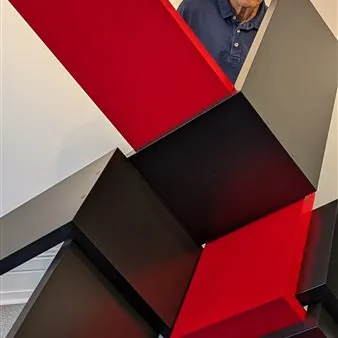

da ven 2 ott a dom 31 gen
Razstava “Sandi Renko, INTEGRALI 1-2 - hommage Srečku Kosovelu/omaggio a Srečko Kosovel”
La mostra INTEGRALI 1-2: omaggio a Srečko Kosovel è un doppio appuntamento dedicato alla ricerca artistica di Sandi Renko che prenderà forma a Trieste in un progetto espositivo articolato in due tempi e due spazi. Il percorso prenderà avvio venerdì 2 ottobre 2026 con…
 Indicazioni
Indicazioni
- Costi e prenotazioni
- Costo non indicato · Prenotazione non indicata
- Programma
- Programma da verificare. Apri la fonte ufficiale per orari e possibili aggiornamenti.
- In caso di maltempo
- Nessuna indicazione specifica pubblicata.
- Note
- Acquisito automaticamente dalla fonte.
L’EVENTO
Descrizione completa
La mostra INTEGRALI 1-2 : omaggio a Srečko Kosovel è un doppio appuntamento dedicato alla ricerca artistica di Sandi Renko che prenderà forma a Trieste in un progetto espositivo articolato in due tempi e due spazi.
Il percorso prenderà avvio venerdì 2 ottobre 2026 con INTEGRALI-1 , al Kulturni dom, in concomitanza con l’apertura della stagione 2026/27 del Teatro Stabile Sloveno, con un focus sulle opere tridimensionali dell’artista, per poi proseguire venerdì 6 novembre 2026 con l’inaugurazione di INTEGRALI-2 , ospitata negli spazi della galleria EContemporary . Un percorso in due capitoli che, attraversando linguaggi e contesti differenti, restituisce una lettura complessiva e stratificata della ricerca di Renko.
Concepita sin dal titolo come omaggio a Srečko Kosovel , la mostra mette in dialogo, per consonanza di tema e sentire, una scelta di poesie con le opere di Renko, collocandosi così tra le iniziative del “Kosovelovo leto 2026” , l’anno che la Slovenia dedica al centenario della morte del poeta.
Dal testo di Jasna Merkù in catalogo:
“La mostra di Sandi Renko non si limita a ripercorrere la sua produzione degli ultimi otto anni, ma si propone anche come una riflessione sul rapporto tra l'opera e il contesto espositivo, oltre che sul dialogo tra le diverse discipline artistiche. Concepita come omaggio al centenario della morte del poeta Srečko Kosovel, l'esposizione sottolinea l'importanza di coniugare innovazione e continuità con la tradizione dell'avanguardia slovena, legata nel nostro contesto culturale soprattutto al Costruttivismo e all'eredità di Avgust Černigoj. Ispirandosi alla neoavanguardia degli anni Sessanta, Renko costruisce inoltre un ponte tra l'esperienza dell'arte programmata e cinetica e l’attualità contemporanea, con lo sguardo rivolto al futuro.”
La mostra sarà visitabile fino al 31 gennaio 2027 al Kulturni dom di Trieste, in via Petronio 4.
Orari: da martedì a venerdì 10-14 e durante spettacoli o eventi.
Ingresso libero
Razstava INTEGRALI 1-2: poklon Srečku Kosovelu / omaggio a Srečko Kosovel je dogodek, posvečen umetniškemu ustvarjanju Sandija Renka , ki bo v Trstu zaživel kot razstavni projekt v dveh delih in na dveh lokacijah.
V petek, 2. oktobra 2026, bo v Kulturnem domu v Trstu odprtje razstave INTEGRALI-1 ob prvi predstavi gledališke sezone 2026/2027 Slovenskega stalnega gledališča. Na njej bo umetnik predstavil svoja tridimenzionalna dela.
6. novembra bo sledila otvoriev razstave INTEGRALI-2 v prostorih galerije EContemporary . Obe razstavi preko različnih jezikov in kontekstov ponujata celovito in večplastno branje Renkovega ustvarjanja.
Že iz samega naslova izhaja, da je razstava zasnovana kot poklon Srečku Kosovelu , saj Renkove stvaritve spremlja izbor Kosovelovih pesmi, ki vzpostavljajo dialog na podlagi tematske in čustvene sorodnosti med umetnikoma. Razstavi se vključujeta v dogodke Kosovelovega leta 2026, ki ga Slovenija posveča stoletnici pesnikove smrti.
Odlomek iz besedila Jasne Merkù v katalogu razstave:
“Razstava Sandija Renka ni le pregled njegovega ustvarjanja zadnjih osem let, je obenem razmislek o pomenu konteksta, kjer se razstava nahaja, in dialoga med umetniškimi zvrstmi. Hommage ob stoletnici rojstva pesnika Srečka Kosovela opozarja na pomen inovativnosti in kontinuitete s smernicami slovenske avantgarde, v našem kulturnem kontekstu predvsem vezane na konstruktivizem in Černigojevo dediščino. Renko se je v šestdesetih letih navdihoval po izkušnjah neoavantgarde in povezal programirano ter kinetično umetnost z aktualnostjo sodobnih prijemov s pogledom vpetim v bodočnost.”
Razstava bo odprta od 2. oktobra 2026 do 31. januaria 2027, Kulturni dom, Ul. Petronio 4, Trst
Urnik: od torka do petka med 10. in 14. uro ter v času predstav oziroma dogodkov
Vstop prost
IL PROGRAMMA
Programma e orari
Appuntamenti raccolti dalle fonti elencate. Dove manca un orario, non è ancora disponibile in questa scheda.
Programma pubblicato
- Dal 2026-10-02 al 2027-01-31
INFORMAZIONI UTILI
Prima di partire
- Controllare la fonte prima di partire.
ORGANIZZAZIONE